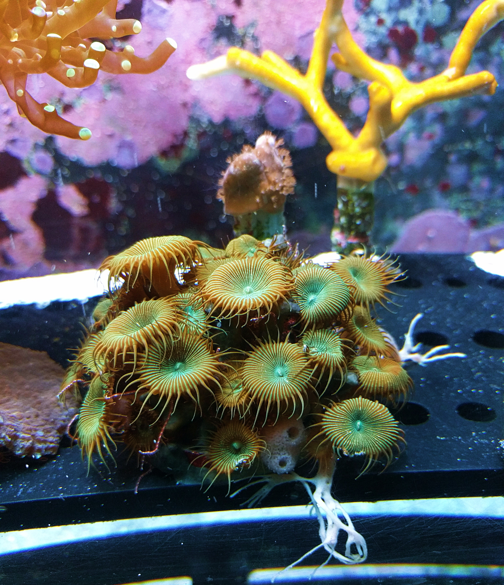

AquaLogic foi desenvolvido exclusivamente para facilitar o seu trabalho na manutenção de seu aquário.

AquaLogic foi desenvolvido exclusivamente para facilitar o seu trabalho na manutenção de seu aquário.
Cadastre seus aquários, crie alertas de troca de filtros e de água, registre parâmetros e acompanhe todo o histórico de seu aquário
Com o atlas, você fica informado sobre o mundo do aquarismo, buscando rapidamente informações sobre espécies de fauna e flora
